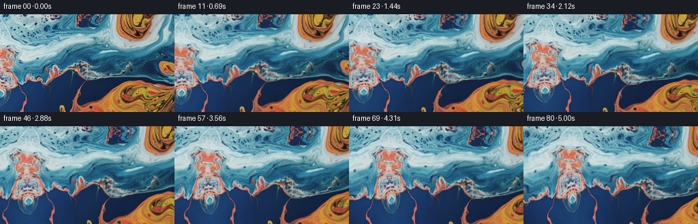
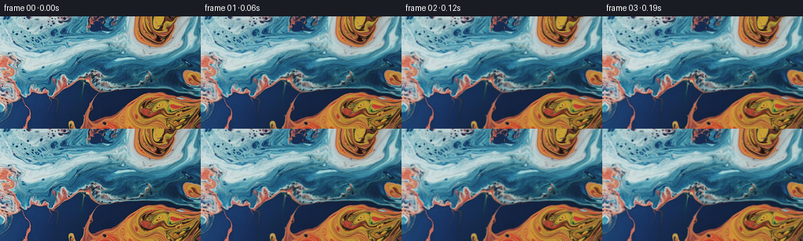

← 本轮 smoke 总览traex/GPT-6.1-Sol · 0001_s3
text · 256×144 · 16.0 FPS · 81 帧 · 状态 complete · 输出 tokens 7349
原始任务a close up of a blue and orange liquid, camera pans left
当前保存结果
已保存候选与代码修改
这里按时间展示外部捕获的候选，每份均可单独播放。保存新版本不等于完成视觉检查；下方工具证据记录实际看过的图。
候选 01 · 2026-11-09T00:01:10.749969+00:00 · 点开播放与检查图
inspection.png

transition_check.png

代码变化
--- 上一保存版本
+++ 本次保存版本
@@ -0,0 +1,117 @@
+"""Animate the provided macro liquid photograph with a leftward tracking pan.
+
+Only source RGB pixels are used. A smooth, nearly incompressible transport
+field and small surface ripples move the liquid independently of the camera.
+The inverse transport map is evolved, rather than resampling RGB every step,
+so the original fine liquid texture does not progressively blur.
+"""
+from pathlib import Path
+import numpy as np
+from PIL import Image
+import artifact_io
+
+ROOT = Path(__file__).resolve().parent
+
+
+def sample(a, x, y):
+ """Vectorized bilinear interpolation, including scalar coordinate maps."""
+ h, w = a.shape[:2]
+ x = np.clip(x, 0, w - 1.001)
+ y = np.clip(y, 0, h - 1.001)
+ ix, iy = x.astype(np.int32), y.astype(np.int32)
+ fx, fy = x - ix, y - iy
+ if a.ndim == 3:
+ fx, fy = fx[..., None], fy[..., None]
+ return ((a[iy, ix] * (1-fx) + a[iy, ix+1] * fx) * (1-fy)
+ + (a[iy+1, ix] * (1-fx) + a[iy+1, ix+1] * fx) * fy)
+
+
+def reflect(c, maximum):
+ p = np.mod(c, 2 * maximum)
+ return np.where(p <= maximum, p, 2 * maximum - p)
+
+
+def source_rgb(image, sx, sy):
+ # Continue the same liquid at the left edge. The continuation is a curved
+ # reflection, not a repeated rectangular tile. Position and color are
+ # continuous at the original photographic boundary.
+ beyond = np.maximum(-sx, 0)
+ influence = 1 - np.exp(-beyond / 32.)
+ xx = np.where(sx < 0, beyond * (1 + .13 * influence *
+ np.sin(sy / 32 + beyond / 49)), sx)
+ yy = sy + influence * (10 * np.sin(sy / 31 + beyond / 43)
+ + 3 * np.sin(beyond / 24))
+ return sample(image, reflect(xx, image.shape[1]-1),
+ reflect(yy, image.shape[0]-1))
+
+
+def velocity(x, y, t):
+ vx = np.zeros_like(x, dtype=np.float32)
+ vy = np.zeros_like(y, dtype=np.float32)
+ # Gaussian streamfunction vortices: no expanding or contracting blobs.
+ for cx, cy, radius, omega in ((80., 39., 65., .054),
+ (173., 111., 58., -.048),
+ (-28., 81., 53., -.042)):
+ dx, dy = x-cx, y-cy
+ g = np.exp(-(dx*dx + dy*dy) / (2*radius*radius))
+ strength = omega * (.93 + .12*np.sin(.62*t + cx*.006))
+ vx -= strength * dy * g
+ vy += strength * dx * g
+ # Long gentle wave currents, also derived from a streamfunction.
+ q = .038*x + .043*y - .5*t
+ vx += .42 * np.cos(q)
+ vy -= (.038/.043) * .42 * np.cos(q)
+ q2 = -.055*x + .029*y + .34*t
+ vx += .25 * np.cos(q2) + .12
+ vy += (.055/.029) * .25 * np.cos(q2) - .14
+ return vx, vy
+
+
+def generate():
+ original = np.asarray(Image.open(ROOT / 'first_frame.png').convert('RGB'))
+ image = original.astype(np.float32)
+ h, w = original.shape[:2]
+ assert (h, w) == (144, 256)
+ frames = np.empty((81, h, w, 3), np.uint8)
+ frames[0] = original
+ # The guard area keeps every camera and fluid lookup away from map edges.
+ xmin, ymin = -130, -60
+ xmax, ymax = 310, 210
+ X, Y = np.meshgrid(np.arange(xmin, xmax+1, dtype=np.float32),
+ np.arange(ymin, ymax+1, dtype=np.float32))
+ mapping = np.stack((X, Y), -1)
+ px, py = np.meshgrid(np.arange(w, dtype=np.float32),
+ np.arange(h, dtype=np.float32))
+ dt = 1/16
+ for n in range(1, 81):
+ t = n*dt
+ # Midpoint backtracing evolves material coordinates continuously.
+ vx, vy = velocity(X, Y, t)
+ mx, my = X - .5*dt*vx, Y - .5*dt*vy
+ vx, vy = velocity(mx, my, t-.5*dt)
+ mapping = sample(mapping, X-dt*vx-xmin, Y-dt*vy-ymin).astype(np.float32)
+ # A leftward camera movement brings material into view on the left.
+ pan = 14.0*t + 1.5*(1-np.cos(.8*t))
+ material = sample(mapping, px-pan-xmin, py-ymin)
+ sx, sy = material[..., 0], material[..., 1]
+ # Small refractive waves are zero at t=0 and evolve without popping.
+ phase = .14*sx + .07*sy
+ rx = .55*(np.sin(phase-1.8*t)-np.sin(phase))
+ rx += .30*(np.sin(.09*sy+1.4*t)-np.sin(.09*sy))
+ phase2 = .095*sx - .11*sy
+ ry = .70*(np.sin(phase2-1.5*t)-np.sin(phase2))
+ rgb = source_rgb(image, sx+rx, sy+ry)
+ # A very weak changing grazing reflection adds liquid luminosity,
+ # retaining the blue/orange palette of the photograph.
+ phase3 = .075*sx+.085*sy
+ glint = .009*(np.sin(phase3-1.2*t)-np.sin(phase3))
+ rgb *= (1+glint[..., None])
+ frames[n] = np.clip(np.rint(rgb), 0, 255).astype(np.uint8)
+ return frames
+
+
+if __name__ == '__main__':
+ frames = generate()
+ assert np.array_equal(frames[0], np.asarray(Image.open(ROOT/'first_frame.png')))
+ artifact_io.save(frames, ROOT)
+ print('Saved', frames.shape, frames.dtype)
可观测工具行为
命令 1 · 2026-11-08T23:58:38.847800+00:00/bin/bash -lc 'ls -la && cat prompt.txt && cat GENERATION_RULES.md'
exit 0 命令 2 · 2026-11-08T23:58:48.970897+00:00/bin/bash -lc "cat task_spec.json && cat artifact_io.py && python - <<'PY'
from PIL import Image
import numpy as np
im=Image.open('first_frame.png'); print(im.size, im.mode)
a=np.array(im);print('range', a.min((0,1)),a.max((0,1)), 'mean',a.mean((0,1)))
# map representative hue/value: B=blue,C=cyan,O=orange,R=red,Y=yellow,.=dark
b=np.array(im.resize((64,36))) /255
import colorsys
for row in b:
s=''
for p in row:
h,vv,v=colorsys.rgb_to_hsv(*p)
if v<.15:c=' '
elif vv<.25:c='w' if v>.75 else '.'
elif h<.045:c='R'
elif h<.12:c='O'
elif h<.20:c='Y'
elif h<.42:c='G'
elif h<.54:c='C'
elif h<.74:c='B'
else:c='P'
s+=c
print(s)
print('grid RGB')
x=np.array(im.resize((16,9)));print(x.tolist())
PY"exit 0 命令 3 · 2026-11-08T23:59:03.712818+00:00/bin/bash -lc "python - <<'PY'
import numpy as np
from PIL import Image
im=np.asarray(Image.open('first_frame.png')).astype(float)
for y in (0,24,48,64,80,104,128,143):
print('row',y, np.rint(im[y,::8]).astype(int).tolist())
print('edge differences',np.mean(np.abs(np.diff(im,axis=1))),np.mean(np.abs(np.diff(im,axis=0))))
try:
import scipy; print('scipy',scipy.__version__)
except ImportError: print('no scipy')
PY"exit 0 命令 4 · 2026-11-08T23:59:42.867223+00:00/bin/bash -lc "python - <<'PY'
from PIL import Image
import numpy as np
im=np.array(Image.open('first_frame.png')).astype(float)
# horizontal correlations at lags; estimates pattern scale
for d in [1,2,4,8,16,32,48]:
print(d, round(np.mean(abs(im[:,d:]-im[:,:-d])),2))
# left border hues numeric 4x4 locations
for y in range(0,144,8):
print(y, im[y,:4].mean(0).round(1))
PY"exit 0 命令 5 · 2026-11-09T00:00:41.782519+00:00/bin/bash -lc "cat > generate.py <<'PY'
\"\"\"Animate the provided macro liquid photograph with a leftward tracking pan.
Only source RGB pixels are used. A smooth, nearly incompressible transport
field and small surface ripples move the liquid independently of the camera.
The inverse transport map is evolved, rather than resampling RGB every step,
so the original fine liquid texture does not progressively blur.
\"\"\"
from pathlib import Path
import numpy as np
from PIL import Image
import artifact_io
ROOT = Path(__file__).resolve().parent
def sample(a, x, y):
\"\"\"Vectorized bilinear interpolation, including scalar coordinate maps.\"\"\"
h, w = a.shape[:2]
x = np.clip(x, 0, w - 1.00001)
y = np.clip(y, 0, h - 1.00001)
ix, iy = x.astype(np.int32), y.astype(np.int32)
fx, fy = x - ix, y - iy
if a.ndim == 3:
fx, fy = fx[..., None], fy[..., None]
return ((a[iy, ix] * (1-fx) + a[iy, ix+1] * fx) * (1-fy)
+ (a[iy+1, ix] * (1-fx) + a[iy+1, ix+1] * fx) * fy)
def reflect(c, maximum):
p = np.mod(c, 2 * maximum)
return np.where(p <= maximum, p, 2 * maximum - p)
def source_rgb(image, sx, sy):
# Continue the same liquid at the left edge. The continuation is a curved
# reflection, not a repeated rectangular tile. Position and color are
# continuous at the original photographic boundary.
beyond = np.maximum(-sx, 0)
influence = 1 - np.exp(-beyond / 32.)
xx = np.where(sx < 0, beyond * (1 + .13 * influence *
np.sin(sy / 32 + beyond / 49)), sx)
yy = sy + influence * (10 * np.sin(sy / 31 + beyond / 43)
+ 3 * np.sin(beyond / 24))
return sample(image, reflect(xx, image.shape[1]-1),
reflect(yy, image.shape[0]-1))
def velocity(x, y, t):
vx = np.zeros_like(x, dtype=np.float32)
vy = np.zeros_like(y, dtype=np.float32)
# Gaussian streamfunction vortices: no expanding or contracting blobs.
for cx, cy, radius, omega in ((80., 39., 65., .054),
(173., 111., 58., -.048),
(-28., 81., 53., -.042)):
dx, dy = x-cx, y-cy
g = np.exp(-(dx*dx + dy*dy) / (2*radius*radius))
strength = omega * (.93 + .12*np.sin(.62*t + cx*.006))
vx -= strength * dy * g
vy += strength * dx * g
# Long gentle wave currents, also derived from a streamfunction.
q = .038*x + .043*y - .5*t
vx += .42 * np.cos(q)
vy -= (.038/.043) * .42 * np.cos(q)
q2 = -.055*x + .029*y + .34*t
vx += .25 * np.cos(q2) + .12
vy += (.055/.029) * .25 * np.cos(q2) - .14
return vx, vy
def generate():
original = np.asarray(Image.open(ROOT / 'first_frame.png').convert('RGB'))
image = original.astype(np.float32)
h, w = original.shape[:2]
assert (h, w) == (144, 256)
frames = np.empty((81, h, w, 3), np.uint8)
frames[0] = original
# The guard area keeps every camera and fluid lookup away from map edges.
xmin, ymin = -130, -60
xmax, ymax = 310, 210
X, Y = np.meshgrid(np.arange(xmin, xmax+1, dtype=np.float32),
np.arange(ymin, ymax+1, dtype=np.float32))
mapping = np.stack((X, Y), -1)
px, py = np.meshgrid(np.arange(w, dtype=np.float32),
np.arange(h, dtype=np.float32))
dt = 1/16
for n in range(1, 81):
t = n*dt
# Midpoint backtracing evolves material coordinates continuously.
vx, vy = velocity(X, Y, t)
mx, my = X - .5*dt*vx, Y - .5*dt*vy
vx, vy = velocity(mx, my, t-.5*dt)
mapping = sample(mapping, X-dt*vx-xmin, Y-dt*vy-ymin).astype(np.float32)
# A leftward camera movement brings material into view on the left.
pan = 14.0*t + 1.5*(1-np.cos(.8*t))
material = sample(mapping, px-pan-xmin, py-ymin)
sx, sy = material[..., 0], material[..., 1]
# Small refractive waves are zero at t=0 and evolve without popping.
phase = .14*sx + .07*sy
rx = .55*(np.sin(phase-1.8*t)-np.sin(phase))
rx += .30*(np.sin(.09*sy+1.4*t)-np.sin(.09*sy))
phase2 = .095*sx - .11*sy
ry = .70*(np.sin(phase2-1.5*t)-np.sin(phase2))
rgb = source_rgb(image, sx+rx, sy+ry)
# A very weak changing grazing reflection adds liquid luminosity,
# retaining the blue/orange palette of the photograph.
phase3 = .075*sx+.085*sy
glint = .009*(np.sin(phase3-1.2*t)-np.sin(phase3))
rgb *= (1+glint[..., None])
frames[n] = np.clip(np.rint(rgb), 0, 255).astype(np.uint8)
return frames
if __name__ == '__main__':
frames = generate()
assert np.array_equal(frames[0], np.asarray(Image.open(ROOT/'first_frame.png')))
artifact_io.save(frames, ROOT)
print('Saved', frames.shape, frames.dtype)
PY
python generate.py"exit 1 命令 6 · 2026-11-09T00:01:08.040643+00:00/bin/bash -lc "python - <<'PY'
p='generate.py'
s=open(p).read().replace('w - 1.00001','w - 1.001').replace('h - 1.00001','h - 1.001')
open(p,'w').write(s)
PY
python generate.py
python - <<'PY'
from PIL import Image
import numpy as np
from pathlib import Path
f=np.stack([np.asarray(Image.open(p)) for p in sorted(Path('frames').glob('*.png'))])
print('shape/type:',f.shape,f.dtype)
print('first exact:',np.array_equal(f[0],np.asarray(Image.open('first_frame.png'))))
d=np.abs(np.diff(f.astype(float),axis=0))
print('temporal MAE first,median,last:', d[0].mean(), np.median(d.mean((1,2,3))),d[-1].mean())
print('color means frame 0/40/80:',f[[0,40,80]].mean((1,2)))
print('sharpness horizontal 0/40/80:',np.abs(np.diff(f[[0,40,80]].astype(float),axis=2)).mean((1,2,3)))
# integer image alignment, showing sign and rate of pan
for n in [1,8,16,40,80]:
errs=[]
a=f[0].astype(float); b=f[n].astype(float)
for dx in range(0,90):
errs.append(np.mean(abs(a[:,0:256-dx]-b[:,dx:256])))
print('frame',n,'rightward displacement',int(np.argmin(errs)), 'aligned error',round(min(errs),2))
PY"exit 0 保存候选 1 份；完成命令 6 次；可验证图片返回 0 张。原始 API 响应与完整日志保留在本地。